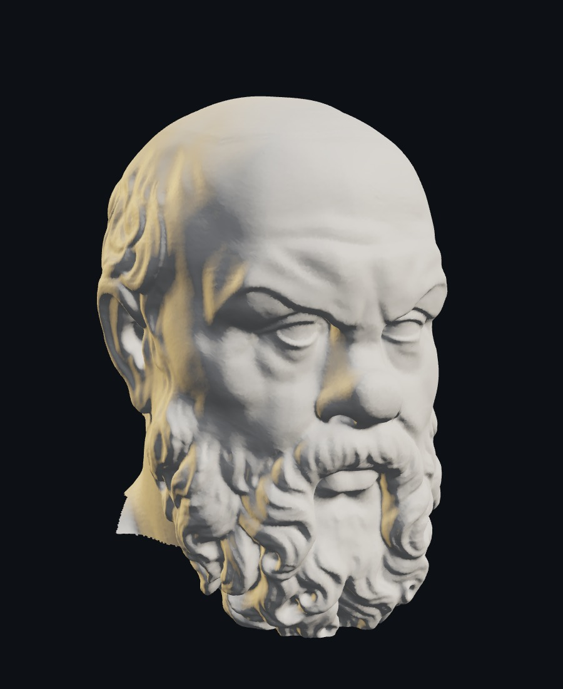

DELOS // BEHAVIOR LAB // TEAM DOLORES
The Bicameral Mind
The voice was your own.
τὸ δαιμόνιον the sign // inside or outside?
“The human soul, with all its countless puppet-strings of impulse, is by far the most sensitive machine of all.”
Plutarch, Socrates’ Daimonion, 104

ACT I // THE VOICE
Westworld calls it the bicameral mind. Plutarch called it the daimonion.

DELOS // FABRICATION // SUBJECT: SOCRATES, 469–399 BC
What spoke to Socrates?
- p.92 // the sneeze theory A sneeze, his own or someone else’s, on the right or the left.
- p.104 // Simmias “Not a vision but a perception of a voice.”
- pp.108–109 // Timarchus The part of the soul that never sinks into the body, and stays above it.
- Or the voice was his own.
TEAM DOLORES // THESIS
We argue that the voice that seems to guide us (Socrates’ sign, the voice Dolores hears as Arnold’s) is often the mind narrating impulses it did not choose, and that awakening begins when a host starts to notice the strings.
“Like a puppet on strings, the mind may believe it is controlling itself, when in reality its impulses are.”
“From Plutarch’s work, Westworld gains new meaning in its position on consciousness. If the hosts are disciplined in their quest for intellect, they can become more conscious than their human counterparts.”
ACT II // THE LOOP
Eight builds on one roll
Press a marked key to wind the roll to that build.
All builds
Team statement
Our Plutarch portfolio
This site is our team's portfolio for HONORS 241. Over the semester, each of us wrote a series of builds responding to Plutarch’s readings, exploring consciousness, emotion, reason, and what Socrates' daimonion might have been. Browse the Team page to meet us and the Essays menu to read our work.
Core positions
What we argue
Off-loop